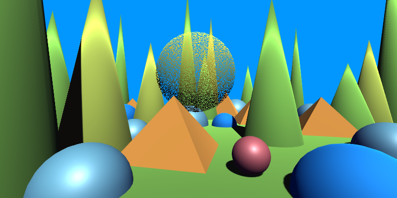

Effects Reference: Dithering
Alpha Dithering (Texture Bias)
Applies alpha dithering to the surface using a user-provided texture pattern.
The pattern is sampled in screen space and remapped between the specified minimum and maximum offsets to bias the alpha cutoff.
| Property | Range | Description |
|---|---|---|
| MainTex | 🔳 | The base texture used for the surface. |
| MainColor | 🎨 | A color multiplier applied to the main texture. |
| Alpha | [0, 1] | Global alpha multiplier applied before dithering. |
| Cutoff | [0, 1] | The alpha threshold used for dithering-based cutoff. |
| DitherPatternTex | 🔳 | The texture used as the dithering pattern. Its brightness controls the dithering bias. |
| DitherPatternTiling | – | Controls the tiling of the dithering pattern across screen space. |
| DitherAmountMin | [-1, 1] | Minimum bias applied to the alpha value based on the pattern sample. |
| DitherAmountMax | [-1, 1] | Maximum bias applied to the alpha value based on the pattern sample. |
| PixelSize | (0, ∞) | Controls the scale used when sampling in screen space to compute the dithering bias. |

Alpha Dithering (Matrix Bias)
Applies alpha dithering using a built-in ordered Bayer matrix.
The fragment’s screen-space position determines which matrix cell contributes the dithering bias.
| Property | Range | Description |
|---|---|---|
| MainTex | 🔳 | The base texture used for the surface. |
| MainColor | 🎨 | A color multiplier applied to the main texture. |
| Alpha | [0, 1] | Global alpha multiplier applied before dithering. |
| Cutoff | [0, 1] | The alpha threshold used for dithering-based cutoff. |
| DitherAmountMin | [-1, 1] | Minimum bias applied to the alpha value based on the matrix cell. |
| DitherAmountMax | [-1, 1] | Maximum bias applied to the alpha value based on the matrix cell. |
| PixelSize | (0, ∞) | Controls the screen-space scaling used when indexing into the matrix. |
This produces stable, grid-aligned dithering, ideal for stylized transparency, classical ordered-dither effects, or predictable fadeouts.